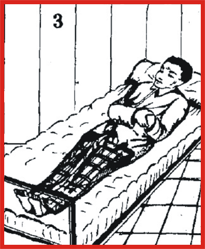

Sholatnya orang yang sakit
1. Wudhu Untuk Pasien
Tidak seperti orang yang sehat, para pasien sering mengalami berbagai kesulitan ketika hendak berwudhu. Kesulitan itu bisa berupa ketersediaan air, atau beberapa kesulitan teknis yang menyangkut tempat atau kesehatan pasien. Dalam hal ini, Islam memberikan keringanan kepada pasien untuk berwudhu dengan cara-cara sebagai berikut:
- Apabila pasien masih mampu bergerak dan menurut dokter, air tidak berdampak negatif untuk proses penyembuhan, maka ia wajib berwudhu sendiri.
- Jika pasien sudah tidak mampu bergerak, maka seseorang bisa membantunya untuk berwudhu.
- Jika menurut dokter, air membahayakan atau memperlambat proses penyembuhan pasien, maka dia bertayamum sebagai ganti wudhu.
- Jika pada bagian anggota badan yang wajib dibasuh atau diusap dalam wudhu terdapat luka, tapi masih memungkinkan dibasuh, maka dia tetap wajib membasuhnya. Jika beresiko, hendaknya dia mengusapnya sekali usapan dengan air. Jika mengusapnya beresiko pula, dia bisa membalutnya dengan gips atau plester dan mengusap balutannya. Jika masih tidak memungkinkan, maka dia boleh bertayamum. Untuk poin yang keempat ini bisa dilakukan setelah anggota badan telah suci baik dari hadats maupun najis. Cara bertayamum bagi anggota badan yang dibalut atau digips cukup mengusap bagian luarnya saja dengan debu.
- Pasien yang tidak bisa menahan kencing, buang angin, keluar darah dan sebagainya secara terus-menerus, dia wajib berwudhu atau tayamum setelah masuk waktu shalat dan segera melakukan shalat. Ia wajib membersihkan pakaian dan tempat yang terkena najis setiap akan shalat berikutnya. Adapun najis yang tidak dapat dihindari selama berlangsungnya shalat, tidak menghalangi sahnya shalat karena keadaan yang amat darurat.
- Jika pasien tidak bisa membersihkan badan, pakaian dan tempat serta tidak ada orang lain yang membantunya, menurut para ulama Hanafiyah dan Syafi’iyah, ia tetap mengerjakan shalat dengan keadaan darurat serba najis karena ia telah terbebas dari tanggungjawab bersuci (shalat lihurmatil waqti). Akan tetapi ia wajib mengulanginya (i’adah) jika sudah sehat.
2. Mandi Untuk Pasien
- Pasien yang berstatus junub artinya memiliki tanggungan hadats besar karena haid, nifas dan sebagainya, ia wajib mandi. Selama belum mandi, ia tidak boleh menjalankan shalat, menyentuh atau membaca al-Qur’an atau tinggal di masjid. Hal ini perlu menjadi catatan sebab banyak pasien yang ingin tetap memperbanyak ibadah untuk memohon kesembuhan dari Allah dengan membaca ayat-ayat al-Qur’an. Karena bacaan al-Qur’an itu telah menjadi kebiasaan yang bersangkutan sehari-hari. Ia tidak sadar atau tidak tahu bahwa bacaan itu diharamkan baginya selama ia belum suci dari hadats besar. Sebagai gantinya ia bisa berdzikir dengan bacaan apapun selain al-Qur’an atau diperbolehkan juga berdoa walaupun doa-doa itu terambil dari al-Qur’an. Misalnya bacaan salawat nabi, asmaul husna, tahlil (la ilaha illallah), tasbih (subahanallah), istighfar (astaghfirullah) atau doa para Nabi yang termaktub dalam al-Qur’an dan sebagainya.
- Bagaimana pasien yang terkena kewajiban mandi namun menurut dokter tidak boleh terkena air atau tidak tersedia air, pasien yang demikian diperbolehkan tayamum sebagai pengganti mandi. Ia mendapatkan sejumlah keringanan sebagaimana keringanan tayamum sebagai pengganti wudhu seperti telah dijelaskan sebelumnya.
- Masih banyak orang Islam yang salah paham dan menganggap tayamum hanya sebagai pengganti wudhu. Kesalahpahaman tersebut juga pernah terjadi pada zaman Nabi Saw, ketika ada orang yang lagi junub dan tidak tersedia air, maka shahabat itu menggelindingkan badannya di atas pasir. Sekali lagi perlu ditegaskan bahwa tayamum bisa menjadi pengganti mandi dengan tata cara pelaksanaan yang sama dengan tayamum pengganti wudhu. Ketika tayamum, ia harus berniat untuk membersihkan hadats besar.
3. Tayamum Bagi Pasien
Pasien diizinkan tayamum jika mengalami hal-hal sebagai berikut:
- Dinyatakan oleh dokter atau menurut keyakinan pasien sendiri bahwa sentuhan air berbahaya bagi kesehatannya atau memperlambat proses penyembuhan.
- Tidak kuat secara fisik pergi ke tempat berwudhu atau adanya kesulitan lainnya.
- Sebagian atau keseluruhan anggota badan yang wajib dibasuh untuk wudhu tidak boleh terkena air seperti ada balutan atau gips, luka dan lain-lain.
- Kesulitan mendapat air. Misalnya air di Rumah Sakit sangat terbatas atau bahkan kehabisan karena macetnya saluran air, atau antrian panjang di tempat berwudhu sedangkan waktu shalat sudah hampir habis.
Tayamum dilakukan setelah masuknya waktu shalat dan menggunakan debu yang kering dan suci. Semua najis yang ada pada tubuhnya wajib dibersihkan terlebih dahulu sebelum tayamum. Bagaimana cara mendapatkan debu tersebut? Cukup mengusap tangan ke tembok atau benda di sekitarnya yang dianggap kering dan berdebu meskipun sedikit.
Bagi pasien yang berpendirian tayamum harus dengan debu yang benar-benar terlihat mata, maka keluarga pasien bisa menyediakan debu suci dari rumah. Jika cara ini yang dilakukan maka pasien dan keluarga harus memperhatikan kebersihan rumah sakit. Harus diusahakan agar debu yang dibawa dari luar rumah sakit benar-benar suci dan diupayakan tidak mengotori rumah sakit karena hal ini bisa juga beresiko terhadap kesehatan para pasien dan orang-orang yang tinggal di ruangan itu.
Tata cara tayamum adalah sebagai berikut:
- Mengusapkan tangan ke tembok ataupun benda di sekitar pasien yang dianggap bersih dan suci serta tidak basah, atau pada debu yang disiapkan secara khusus dari rumah oleh pasien atau keluarganya.
- Mengusapkan kedua telapak tangan tersebut pada muka dengan terlebih dahulu mengibaskan tangan atau meniupnya agar debu tidak membekas pada wajah.
- Mengusapkan kedua tangan ke tembok atau debu sekali lagi.
- Mengusap tangan kanan dan kemudian tangan kiri sampai ke siku. Jika ada kesulitan melepas lengan baju, atau alasan lain, maka boleh mengusap tangan sampai ke pergelangan saja.
- Pasien yang tidak dapat melakukan wudhu dan tayamum sendiri, dapat dibantu oleh orang lain sesama jenis atau lain jenis yang mahram, misalnya anak, saudara kandung dan sebagainya.
Orang yang tidak bisa melakukan wudhu, mandi, maupun tayamum karena berbagai kesulitan, maka para ulama berbeda pendapat tentang kewajiban shalatnya.
- Menurut ulama Malikiyah, dia tidak lagi terkena kewajiban shalat.
- Menurut ulama Hanafiyah dan Syafi’iyah, dia tetap shalat tanpa bersuci namun wajib mengulanginya jika sudah sehat. Shalat ini disebut shalat lihurmatil waqti yaitu shalat yang dilakukan semata-mata untuk menghormati kemuliaan waktu shalat.
- Menurut ulama Hanabilah, dia shalat seperti biasa sekalipun tanpa bersuci dan tidak wajib mengulanginya.
4. Shalat Pasien
Islam adalah agama kemudahan. Orang yang mengalami kesulitan menjalankan ibadah karena kondisi tertentu, selalu diberi jalan kemudahan oleh agama. Demikian juga shalat bagi pasien baik di rumah sakit atau di rumah sendiri. Ia bisa menjalankan shalat dengan berdiri, duduk, terlentang dan dengan cara lain yang tidak menyulitkan baginya.
- Shalat Berdiri
Pasien yang masih mampu berdiri dan tidak mengkhawatirkan sakitnya bertambah parah, wajib melaksanakan shalat dengan cara berdiri
Menurut Imam Hanafi dan Imam Hanbali, jika pasien masih kuat berdiri dengan bantuan tongkat atau bersandar pada tembok atau orang lain dan tidak mempengaruhi proses kesembuhan, ia masih tetap wajib berdiri.
Adapun shalat sunnah seperti shalat sebelum dan sesudah shalat wajib (shalat sunnah rawatib), shalat tahajud dan sebagainya boleh dikerjakan dengan duduk sekalipun ia sehat dan kuat berdiri. Sekalipun diizinkan, namun shalat sunnah sebaiknya dikerjakan dengan berdiri bagi orang yang masih sehat karena shalat dengan berdiri lebih utama daripada dengan duduk. Nabi Saw bersabda,”Jika seseorang melakukan shalat (sunnah) sambil berdiri, maka hal itu lebih baik, dan barang siapa shalat sambil duduk maka ia mendapat separo pahala shalat dengan berdiri, dan barang siapa yang shalat sambil terlentang maka ia mendapatkan separo pahala shalat dengan duduk.” (HR. Al-Bukhari)
- Shalat Duduk
Dalam kondisi pasien tidak mampu melaksanakan shalat dengan berdiri, maka ia bisa shalat dengan duduk. Nabi Saw bersabda, ”Shalatlah dengan berdiri, jika engkau tidak mampu (dengan berdiri), maka shalatlah dengan duduk, jika engkau tidak mampu shalat (dengan duduk), maka shalatlah dengan berbaring.” (HR. Al-Bukhari)
Shalat fardhu (wajib) boleh dikerjakan dengan duduk jika:
- aPasien tidak kuat berdiri, atau kuat namun tidak diizinkan menurut petunjuk dokter.
- Tidak ada tempat lain selain tempat tidur pasien dan tidak memungkinkan berdiri di atasnya karena tempat tidur memantul, rapuh dan sebagainya. Kondisi inilah yang paling sering dialami oleh banyak pasien.
- Pasien bertinggi badan yang tidak memungkinkan dia berdiri di tempat itu.
Adapun tata-caranya shalat duduk adalah:
- Duduk menghadap kiblat dengan posisi iftirasy (duduk di atas mata kaki kiri, telapak kaki kanan ditegakkan, ujung jari kaki kanan ditekuk menghadap kiblat). Adapun cara duduknya bisa dengan bersila, iftirasy, atau menyelonjorkan kaki ke arah kiblat. Menurut kebanyakan ulama, duduk iftirasy lebih baik. Imam As-Subki dan Al-Adzra’i berpendapat lain, bahwa bersila lebih utama karena untuk membedakan antara duduk karena darurat lantaran tidak bisa berdiri dengan duduk iftirasy secara normal pada posisi tasyahud (duduk pada tasyahud awal atau duduk di antara dua sujud). Bagi perempuan lebih baik duduk bersila, agar auratnya lebih tertutup.
- Berniat shalat dan kemudian menjalankan semua rukun (aturan wajib) shalat.
- Ketika ruku’, badan dibungkukkan sedikit dan tangan diletakkan di atas paha.
- Untuk posisi sujud, bisa dengan sujud sempurna jika kesehatan memungkinkan dan bisa dengan membungkukkan badan dengan posisi sedikit lebih rendah daripada posisi ruku’.
- Untuk duduk tasyahud (duduk terakhir sebelum salam penutup shalat) bisa dengan tawarruk (seperti duduk iftirasy hanya saja telapak kaki kiri dikeluarkan ke kanan sehingga pantat duduk di atas alas shalat) atau dengan duduk istirasy jika fisik tidak memungkinkan.
- Shalat Berbaring
Shalat dengan berbaring dilakukan bagi pasien yang tidak mampu shalat dengan berdiri ataupun duduk. Adapun tata caranya adalah sebagai berikut:
a. Berbaring (miring) dengan bertumpu pada lambung kanan, kepala di sebelah utara, dada dan wajah menghadap kiblat.
b. Berniat shalat dan kemudian menjalankan semua rukun (aturan wajib) shalat.
c. Ketika ruku’ sedikit menundukkan kepala ke arah dada.
d. Ketika sujud, menundukkan kepala lebih menunduk daripada ketika ruku’.
e. Selanjutnya meneruskan rukun shalat sampai salam dalam posisi berbaring.
- Shalat Terlentang
Apabila pasien tidak mampu melakukan shalat dengan duduk ataupun berbaring, maka ia bisa melakukan shalat dengan terlentang. Adapun tata caranya, ialah:
a. Pasien tidur terlentang dengan kaki membujur ke arah kiblat, kepala diangkat sedikit tinggi dengan bantal atau lainnya dan wajah menghadap kiblat. Jika karena sesuatu hal sehingga tidak memungkinkan menghadapkan wajah ke arah kiblat, misalnya karena posisi tempat tidur, atau karena kepala tidak bisa diangkat lebih tinggi maka cukup dengan menghadapkan kedua telapak kaki saja kearah kiblat.

b. Ketika ruku’ sedikit menundukkan kepala ke arah dada.
c. Ketika sujud, menundukkan kepala sedikit lebih menunduk daripada ketika ruku’.
d. Selanjutnya meneruskan rukun sampai salam dalam keadaan terlentang.
- Shalat Isyarat
Jika pasien tetap tidak bisa melakukan shalat dengan semua keringanan di atas, maka cara yang terakhir adalah shalat dengan isyarat. Adapun tata caranya ialah:
a. Posisi badan bebas. Jika masih mungkin, tetap menghadap kiblat.
b. Semua gerakan shalat dilakukan hanya dengan isyarat anggota badan misalnya jari telunjuk tangan, kedipan mata atau lainnya.
c. Jika isyarat dengan anggota tubuh tidak mampu, maka cukup isyarat dengan hati demikian juga bacaan-bacaan shalat. Hanya pasien dan Allah yang dapat mengetahui shalat dengan cara ini. Inilah ikhtiar terakhir yang dilakukan oleh pasien dalam memenuhi kewajibannya sebagai hamba Allah.
d. Jika dengan isyarat hati tidak bisa, maka berarti pasien sudah tidak terbebani kewajiban apapun.
e. Untuk kemudahan dan konsentrasi shalat pasien, ia boleh dipandu gerakannya oleh orang lain, seperti perawat, anggota keluarga dan lain sebagainya. ,
- Shalat Wanita Hamil
Sebagaimana diuraikan sebelumnya, bahwa shalat tidak bisa ditinggalkan oleh siapapun dan dengan alasan apapun. Oleh sebab itu, orang yang sedang hamil tetap berkewajiban shalat. Bagi wanita hamil yang tidak mengalami kesulitan, ia wajib menjalankan shalat dengan tata cara yang baku sebagaimana biasa. Namun bagi yang mengalami kesulitan, maka bisa melakukan shalat dengan beberapa keringanan seperti telah diuraikan sebelumnya, yaitu dengan duduk, berbaring, terlentang dan sebagainya.
5. Puasa Bagi Wanita Hamil
Puasa Ramadhan merupakan kewajiban bagi setiap muslim yang sehat dan tidak mengalami kesulitan menjalankannya. Bagi yang mengalami kesulitan termasuk wanita hamil, boleh tidak berpuasa. Apalagi menurut petunjuk dokter puasa membahayakan diri sang ibu atau bayi dalam kandungan. Bagi wanita hamil yang demikian, semua ulama sepakat diperbolehkan meninggalkan puasa. Namun, para ulama masih berbeda pendapat tentang qadha’ atau fidyah yang bersangkutan.
6. Puasa Bagi Ibu Menyusui
Madzhab Syafi’i menambahkan, bahwa jika ia tidak berpuasa hanya karena pertimbangan kesehatan si bayi, maka ia wajib mengganti puasa dan membayar fidyah. Mengenai fidyah dan qadha’ puasa, berikut pendapat beberapa ulama terkait wanita hamil atau menyusui:
- Jika ia khawatir puasa dapat membahayakan kesehatannya atau kesehatan anaknya, maka boleh tidak berpuasa tetapi wajib mengqada’ di luar Ramadhan dan tanpa membayar fidyah.
- Menurut Imam Syafi’i, jika ia khawatir puasa bisa membahayakan kesehatan anaknya saja dan tidak membahayakan kesehatannya sendiri, maka boleh tidak berpuasa, tetapi wajib mengqadha’ dan membayar fidyah.
- Sementara, dalam kasus di atas, Imam Hanafi berpendapat harus qadha’ dan tidak perlu membayar fidyah. Dalil yang memperbolehkan meninggalkan puasa bagi wanita hamil atau menyusui diqiyaskan dengan orang yang sedang sakit dan musafir (orang yang dalam perjalanan). Juga berdasarkan sabda Rasul Saw yang menyatakan bahwa Allah Swt memperbolehkan seorang musafir untuk tidak berpuasa, boleh qashar dan jama’ shalat.
7. Tindakan Untuk Orang Menjelang Mati
- Menurut Abdurrahman Al-Juzairi, ada beberapa hal yang harus dilakukan ketika membimbing orang yang mendekati kematian, antara lain; jika keadaan memungkinkan, sebaiknya pasien yang mendekati kematian dihadapkan wajahnya ke kiblat dengan posisi badan miring pada lambung kanan. Jika sulit, maka posisi terlentang, kedua kakinya saja yang dihadapkan ke kiblat dan kepala diangkat agak ke atas.
- Talqin, yaitu membimbing pasien membaca kalimat syahadat. Jika keadaan sudah berat, tidak diharuskan pasien menirukan bacaan syahadat. Anggukan kepala atau isyarat lain sudah cukup. Dalam al-Fatawa Imam Nawawi menuturkan, bahwa mentalqin (membimbing membaca kalimat tauhid) orang yang akan meninggal dunia sebelum nafasnya sampai di tenggorokan itu disunnahkan. Berdasarkan hadis shahih riwayat Muslim, kalimat talqin adalah laa ilaaha illallah (tiada tuhan selain Allah) dan beberapa ulama madzhab Syafi’i menambahkan kalimat muhammadur rasulullah (Muhammad adalah utusan Allah). Namun, mayoritas ulama menyatakan, tidak perlu ditambah dengan bacaan itu. Rasulullah Saw bersabda,”Orang yang akhir ucapannya adalah laa ilaaha illallah, maka ia pasti masuk surga (bersama orang-orang yang beruntung).” (HR. Abu Dawud, Ahmad dan Al-Hakim)
- Hendaknya anggota keluarga dan sahabatnya berada di samping pasien seraya berdoa untuknya. Dimaksudkan juga memberi kesempatan kepada pasien untuk menyampaikan wasiat, hibah dan lain-lain. Pasien dijauhkan dari benda-benda yang tidak disukai oleh para malaikat seperti binatang anjing dan sebagainya. Hal ini dimaksudkan agar para malaikat ikut memohonkan rahmat bagi pasien.
- Membacakan surat Yasin kepada pasien dengan suara yang lembut agar tidak mengganggu pasien di sekitarnya. Doa yang paling baik bagi pasien saat menghadapi kematian adalah dengan membacakan surat Yasin, berdasarkan sabda Nabi Saw, ”Bacakanlah surat Yasin untuk orang-orang yang akan meninggal kalian.” (HR. Abu Dawud)
- Pasien sebaiknya dibimbing dan diingatkan untuk berprasangka baik kepada Allah. Jika telah wafat, maka dipejamkan kedua matanya dan dibacakan doa untuknya. Tulang rahang ditarik ke atas dengan kain halus, semua persendian diluruskan bila perlu dengan minyak, mengganti pakaian yang menempel pada jenazah dengan pakaian atau kain yang ringan, diberi wangi-wangian serta segera dimandikan.
- Mendoakan jenazah adalah hal yang sangat dianjurkan dalam agama Islam lebih-lebih bagi ahli waris; anak, suami, istri, saudara, orang tua, dan keluarga lainnya. Nabi Saw bersabda ”Apabila manusia mati, putuslah amalnya kecuali tiga macam; shadaqah jariyah, ilmu yang bermanfaat, atau anak shaleh yang mendoakannya.” (HR. Muslim)
Ditulis oleh: KH. Abd. Nashir Abd. Fattah (Rais Syuriah PCNU Jombang)